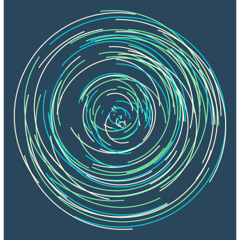
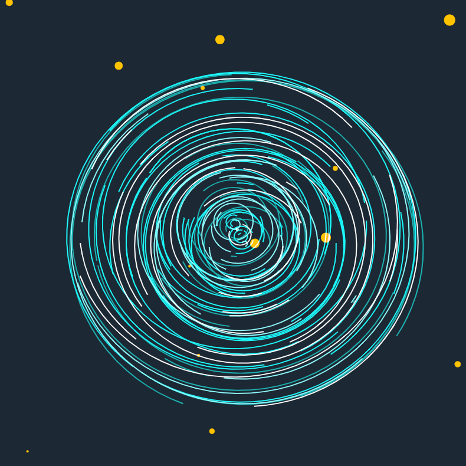
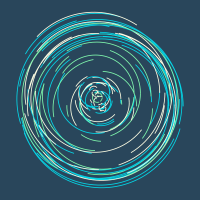
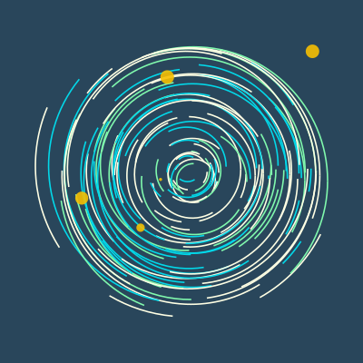

Making Sometimes-Circles
In this post, I will explain the generative art techniques used to create Sometimes Circles. First, I will explain the math behind a single Sometimes Circle. Then I'll discuss stacking Sometimes Circles including size and position.
Inspiration
Excerpt from "The Mother Ship" by MisterXi (GitHub)
I saw these circles in a piece on /r/generative and thought I could bang it out in an evening. It took more than an evening.
One Sometimes-Circle
A sometimes-cirle is a list of arc lengths measured in degrees. Each arc length is uniformly sampled from the range [10, 160]. Whether or not the first arc length is draw is decided by a fair coin flip (50/50 change) and then it alternates through the list. The color is uniformly selected from a list of three colors.
Stacking Sometimes-Circles
Sometimes-circles differ in their scale and their origins. Scales are uniformly samples between 1 and 10. The origin is modeled as sampling a "drift" on the X and Y axes. The drift along both axes are uniformly sampled between -0.1 and 0.5.
Polka Dots
Slightly translucent polka dots are scattered across the image. They are scaled between 0.1 and 0.5. The origin is sampled in the same way as a sometimes-circle but with a different range. Uniform sampling is not ideal here because it heavily prefers the region with the circles intead of the corners